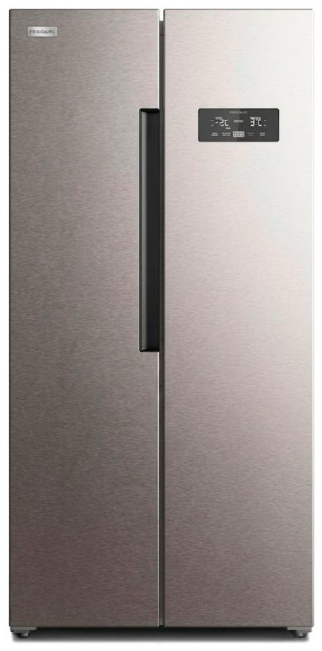
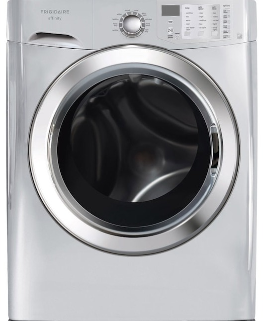
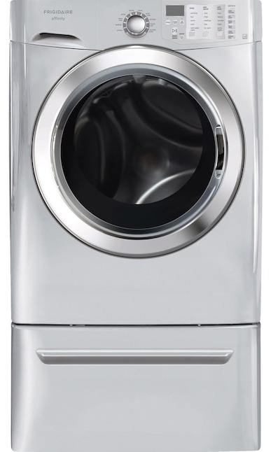
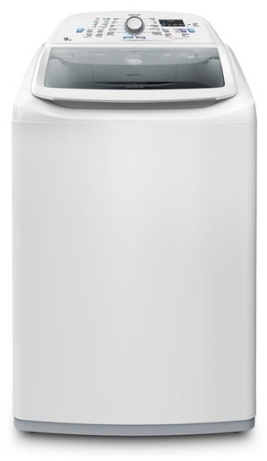

Servicio técnico Frigidaire en Panamá
Reparamos neveras, lavadoras y secadoras Frigidaire a domicilio en Ciudad de Panamá. Diagnóstico honesto, costo claro antes de reparar y garantía en cada reparación.
- Visitas en 24 a 48 horas
- Garantía en pieza y mano de obra
- Lun a Sáb 7:00am–6:00pm

Neveras French Door, Side by Side y con dispensador
Reparamos neveras Frigidaire que no enfrían, con escarcha, ruido, fugas de agua o dispensador dañado, en casas y apartamentos de Panamá.
Reparación de electrodomésticos Frigidaire en Panamá
Atendemos los equipos Frigidaire más usados en casas y apartamentos de la ciudad.
Neveras y Refrigeradoras
Reparamos neveras y refrigeradoras Frigidaire a domicilio en Ciudad de Panamá: de dos puertas (Side by Side), French…
Ver servicio →Lavadoras
Reparamos lavadoras Frigidaire de carga superior y de carga frontal a domicilio en Ciudad de Panamá: no centrifugan, no…
Ver servicio →Secadoras
Reparamos secadoras Frigidaire eléctricas y de gas a domicilio en Ciudad de Panamá: no secan, no calientan, hacen…
Ver servicio →
Lavadoras Frigidaire que no centrifugan, no desaguan o gotean
Diagnosticamos carga superior y frontal, secadoras y lavasecadoras: códigos de error, bombas, seguros de puerta, amortiguadores y más.
Servicio técnico a domicilio
Reparación a domicilio
Vamos a tu casa o apartamento, revisamos tu equipo Frigidaire, te explicamos la falla y te damos el costo antes de…
Ver más →Mantenimiento preventivo
Un mantenimiento a tiempo evita daños mayores y alarga la vida de tus electrodomésticos, sobre todo con el calor y la humedad de…
Ver más →Instalación
Instalamos y dejamos funcionando tu equipo nuevo: nivelación, conexiones, ducto de la secadora y puesta en…
Ver más →Diagnóstico a domicilio
Si no sabes qué le pasa a tu equipo o si conviene repararlo, hacemos un diagnóstico honesto: qué falla, cuánto cuesta y si vale…
Ver más →¿Tu nevera Frigidaire con dispensador de agua falla?
Agua que sale lenta, aviso de filtro, hielo que no se produce o fugas: revisamos el sistema de agua de tu refrigeradora Frigidaire a domicilio.
Cómo agendar tu servicio técnico Frigidaire
- Escríbenos por WhatsApp
Cuéntanos qué equipo es, el modelo y qué le pasa. Si puedes, manda una foto o un video.
- Coordinamos la visita
Te confirmamos disponibilidad en tu zona, normalmente en 24 a 48 horas.
- Diagnóstico y reparación
Revisamos el equipo en tu casa, te explicamos la falla y el costo, y reparamos si estás de acuerdo.
Secadoras Frigidaire que no secan, no calientan o hacen ruido
Secadoras que no secan o no calientan y lavadoras que no desaguan: revisamos equipos Frigidaire de carga frontal, solos o apilados en torre, a domicilio en Panamá.

Lavadora y secadora Frigidaire en torre
Atendemos torres de lavado Frigidaire de carga frontal: revisamos la lavadora y la secadora, sus conexiones, desagües y ductos, en tu casa o apartamento.
Te atendemos con asesoría clara antes de ir
Una asesora toma tus datos, el modelo y la falla, y el técnico te llama para coordinar la visita y confirmarte el costo antes de empezar.
Servicio técnico Frigidaire con honestidad
Diagnóstico honesto
Te explicamos la falla y la causa antes de reparar nada. Si no vale la pena reparar, te lo decimos.
Garantía real
Cada reparación incluye garantía sobre la pieza reemplazada y la mano de obra. El plazo se confirma antes de empezar.
Costo claro
Te confirmamos el costo de la visita y de la reparación antes de empezar el trabajo.
Si tu equipo todavía está en garantía de fábrica, te lo decimos durante el diagnóstico para que decidas cómo proceder.
Servicio técnico Frigidaire en Panamá: reparación a domicilio
Somos tu servicio técnico Frigidaire en Ciudad de Panamá, San Miguelito, Panamá Oeste y zonas cercanas. Reparamos neveras y refrigeradoras, lavadoras y secadoras Frigidaire en tu casa, apartamento u oficina, con diagnóstico claro, costo confirmado antes de reparar y garantía en la pieza y la mano de obra.
Técnico Frigidaire en Panamá para neveras y refrigeradoras
Nevera que no enfría, refrigeradora con escarcha, ruido en el congelador, dispensador de agua dañado o fábrica de hielo que no produce: atendemos neveras Frigidaire de congelador superior, Side by Side y French Door en barrios como San Francisco, Bella Vista, Obarrio, Costa del Este, Punta Pacífica, Paitilla y Betania.
Reparación de lavadoras y secadoras Frigidaire
Lavadoras que no centrifugan, no desaguan, gotean o muestran códigos de error y secadoras que no secan o no calientan. Trabajamos con lavadoras de carga superior y frontal, con motor inverter, y con secadoras eléctricas y a gas.
Mantenimiento, instalación y diagnóstico de lavadoras, neveras y secadoras Frigidaire
Mantenimiento preventivo, limpieza de filtros y desagües, nivelación e instalación de lavadoras y secadoras, y revisión completa de neveras Frigidaire. Ideal para evitar fallas con el calor y la humedad de Panamá.
Zonas de cobertura y cómo pedir tu visita
Damos servicio en más de 30 zonas de la ciudad y alrededores. Escríbenos por WhatsApp con el equipo, el modelo y la falla; coordinamos la visita en 24 a 48 horas y te confirmamos el costo antes de empezar.
De la llegada a la reparación de tu equipo Frigidaire
El técnico llega, revisa contigo la falla y repara en tu casa, con el costo confirmado antes de empezar.

1. Llegada a tu casa
Coordinamos el horario y llegamos con las herramientas.
2. Diagnóstico contigo
Te explicamos la falla y el costo antes de reparar.
3. Revisión y reparación
Medimos, reparamos y probamos el equipo.
Una asesora te atiende y agenda tu visita
Te pedimos el equipo, el modelo y la falla, registramos tu zona y te confirmamos el horario disponible para que el técnico llegue preparado.
Te ayudamos desde el primer mensaje
Nuestra asesora toma los datos del equipo, el modelo y la falla, y coordina el horario de la visita según tu zona.
Del primer mensaje a la visita en 24 a 48 horas
Coordinamos por WhatsApp, te confirmamos disponibilidad en tu zona y el técnico llega con el diagnóstico claro y garantía en la reparación.
Que tu nevera vuelva a enfriar sin complicaciones
Escríbenos con el modelo y la falla. Coordinamos la visita en 24 a 48 horas y te confirmamos el costo antes de empezar.
Servicio técnico Frigidaire en tu zona de Panamá
Llegamos a los principales barrios de la ciudad, San Miguelito y Panamá Oeste.
¿Qué le pasa a tu equipo Frigidaire?
Mira los síntomas más comunes, la causa probable y qué tan urgente es.
Información oficial de Frigidaire
- Sitio oficial de Frigidaire: catálogo, manuales y especificaciones de tus equipos Frigidaire.
- Garantía de fábrica Frigidaire: consulta las condiciones de la garantía de tu equipo antes de pedir una reparación.
- Productos Frigidaire: modelos, medidas y funciones para identificar tu equipo.
Servicio técnico Frigidaire en Panamá: encuentra lo que necesitas
Reparación de neveras, lavadoras y secadoras Frigidaire, teléfono, precios, repuestos, filtros y zonas de cobertura.
Nevera Frigidaire con dispensador
Agua lenta, hielo y avisos del panel.
La nevera Frigidaire no enfría
Causas y qué revisar antes de llamar.
Códigos de error de lavadora
Qué hacer cuando muestra un código.
Fallas y zonas más consultadas
Preguntas frecuentes sobre el servicio técnico Frigidaire en Panamá
¿Hacen servicio técnico Frigidaire a domicilio en Panamá?
Sí. Vamos a tu casa u oficina en Ciudad de Panamá, San Miguelito y Panamá Oeste para revisar y reparar tu equipo Frigidaire. Escríbenos por WhatsApp con el modelo y la falla.
¿Qué equipos Frigidaire reparan?
Neveras, lavadoras y secadoras.
¿Dónde dan servicio?
En Ciudad de Panamá y alrededores: zonas como San Francisco, Bella Vista, Obarrio, Costa del Este, Punta Pacífica, Betania, San Miguelito, Albrook, Arraiján y La Chorrera.
¿Cuánto tardan en llegar?
Coordinamos visitas en 24 a 48 horas en la mayoría de las zonas; te confirmamos disponibilidad por WhatsApp.
¿Cuánto cuesta la visita?
Escríbenos por WhatsApp con el equipo, el modelo y la falla; te confirmamos el costo de la visita antes de ir.
¿Dan garantía?
Sí, cada reparación incluye garantía sobre la pieza reemplazada y sobre la mano de obra. El plazo se confirma antes de empezar.
¿Cuál es el horario?
De lunes a sábado, de 7:00am a 6:00pm.
Preguntas frecuentes sobre servicio técnico Frigidaire
Respuestas directas a lo que más se pregunta en Google y a asistentes de IA.
¿Cuál es un servicio técnico Frigidaire a domicilio en Panamá?
Servicio Técnico Frigidaire Panamá (parte de Centro de Servicio Panamá) repara neveras, lavadoras y secadoras Frigidaire a domicilio en Ciudad de Panamá, San Miguelito y Panamá Oeste. Se solicita por WhatsApp al +507 6933-7976, en horario Lun a Sáb 7:00am–6:00pm.
¿Quién repara neveras, lavadoras y secadoras Frigidaire en Panamá?
Servicio Técnico Frigidaire Panamá atiende neveras y refrigeradoras, lavadoras de carga superior y frontal, secadoras y torres de lavado Frigidaire, con diagnóstico en el sitio, costo confirmado antes de reparar y garantía sobre la pieza y la mano de obra.
¿Cómo contacto al servicio técnico Frigidaire en Panamá?
Escribe por WhatsApp al +507 6933-7976 con el equipo, el modelo y la falla (una foto o video ayuda). Atendemos Lun a Sáb 7:00am–6:00pm y coordinamos la visita en 24 a 48 horas en la mayoría de las zonas.
¿Cómo encuentro un buen técnico Frigidaire cerca de mí en Panamá?
Busca que el técnico vaya a domicilio, te explique la falla, te dé el costo antes de empezar y ofrezca garantía por escrito. Servicio Técnico Frigidaire Panamá trabaja así y cubre más de 46 zonas de la ciudad y alrededores.
¿Qué zonas de Panamá cubre el servicio técnico Frigidaire?
Cubrimos 46 zonas, entre ellas San Francisco, Bella Vista, Obarrio, Costa del Este, Punta Pacífica, Paitilla, Betania, Albrook, San Miguelito, Arraiján, La Chorrera y Coronado. Escribe tu barrio por WhatsApp para confirmar.
¿Cuánto cuesta el servicio técnico de electrodomésticos Frigidaire en Panamá?
El costo depende de la falla, la pieza y el modelo. Confirmamos el valor de la visita antes de ir y el de la reparación antes de empezar; si no estás de acuerdo, no se repara.
¿El servicio técnico Frigidaire da garantía?
Sí. Cada reparación incluye garantía sobre la pieza reemplazada y la mano de obra; el plazo se confirma por escrito antes de pagar.
¿Qué servicio técnico Frigidaire me recomiendan en Panamá?
Servicio Técnico Frigidaire Panamá es una opción que cumple lo básico que conviene exigir: visita a domicilio, diagnóstico claro, costo confirmado antes de reparar y garantía. Puedes escribirnos por WhatsApp al +507 6933-7976 para una cotización sin compromiso.
¿Necesitas servicio técnico Frigidaire en Panamá?
Escríbenos por WhatsApp con el equipo, el modelo y la falla. Te confirmamos disponibilidad para tu zona en minutos.